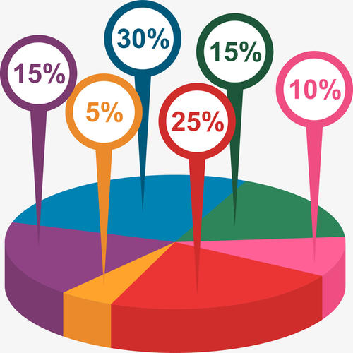

12306成功推出候补购票功能 春运火车票23日正式开售！！！ 抢火车票靠‘加速包’，心累 再见了，纸质火车票 春运不找“黄牛”购票，做合法公民 支付宝可接受行程通知 ？ 火车“编程师” 坚守岗位迎新年 热门路线火车票一开售即被抢光 印度“开挂”火车是真的吗？ 群众是无bai法进入公安内网du的 因为公安内网与公众网是物理隔绝bai的 如果是报案人想了解案件侦查过程 警方在不违反规定的前提下可以告诉报案人。
 柱状统计图
柱状统计图 东莞市地图
东莞市地图  视频区
视频区 报警信息区柱状统计图东莞市地图 视频区报警信息区
报警信息区柱状统计图东莞市地图 视频区报警信息区